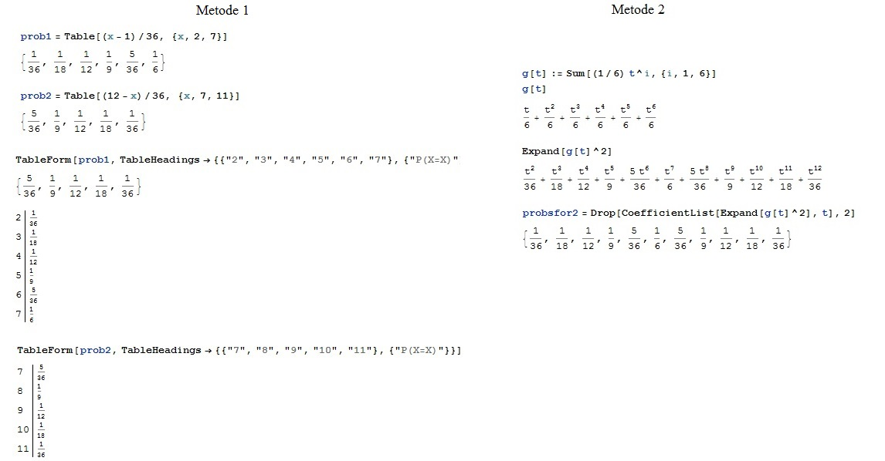
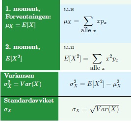
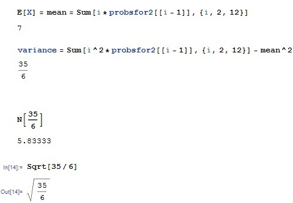
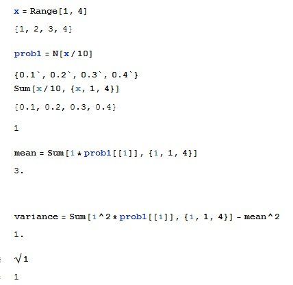

Sannsynlighet, forventning, variansen, standardavviket.En stokastisk variabel
tar verdier fra ethvert utfall. Verdiene har enten diskret eller kontinuerlig fordeling. Mest sannsynlige utfallet utrykkes ved hjelp av forventningsverdien. Spredningen av utfallene rundt forventningsverdien vises ved hjelp av variansen og standardavviket. Definisjon:
1.X tar kun et nummererbart, skillbart antall verdier. For eksempel i {0,1,2,3,4,...,n),{2, ¼, ⅖, ⅜, 3, ½, 4}
2. f(k)≥0 for alle k∈U
3.∑ k∈Uf(k)=1
For en konkret stokatisk variabel X
1. Programmer sannsynlighetsfunksjonen med de gitte variablene. Du kan også generere funksjonen g[t] som gir sannsynlighet for 1 terning og g[t]2 som viser sannsynlighet over summen med 2 terninger.
2. Det kan settes opp en tabel over sannsynlighetene for de verdier som har sannsynlighet over 0.
In[2]:=
TableForm[funksjonen,
TableHeadings -> {{"tall/verdier du vil ha i første kolonne"}, {"navne på sannsynlighetsfordeling"}}]
Eksempel:
X er sumen du får når du slår 2 vannlige , rettferdige terninger D6. Vi gir navn på de to sannsynlighetsfordelingene prob1, prob 2 og utrykker de som: P(X = x) = P(X = 12 − x) = (x − 1)∕36 for x = 1, 2, 3, 4, 5, 6,7. og P(X = x) = P(X = 12 − x) = (12 − x)∕36 for x = 7,8,9,10,11.

1. og 2. moment, forventningen, variansen, standardavviket. Definisjon:
μX=E[X], E[X]2, σ2X, σX

1. For å finne μX=E[X]. Skriv som innput
In[1]:= mean = Sum[i*sannsynlighetsfunksjon[[i - 1]], {i, grenser til i}]
2. Programmer σ2X.
3. Ta kvadratrot av svaret for å finne σX.
In[1]:= kombinasjon Esc Sqrt Esc [σ2X-verdi]
Eksempel:

For mengden M og funksjonen f
Eksempel
Finn sannsynligheter, μX, σ2X, σX for M={1,4} og f(x)=x/10 hvis x={1,2,3,4} og lik 0 ellers
1. Beskriv x ved å taste
In[1]:=x = Range[1, 4]
2. Programmer sannsynligheten:
In[2]:=velgfrittnavn på funksjonen = N[x/10]
eller ved hjelp av
In[3]:=Sum[x/10, {x, 1, 4}]
4. For å finne μX=E[X]. Skriv som innput
In[4]:= Sum[i*prob1[[i]], {i, 1, 4}]
5. Programmer σ2X
In[5]:=Sum[i^2*prob1[[i]], {i, 1, 4}] - mean^2
6. Ta kvadratrot av svaret for å finne σX.
In[6]:= kombinasjon Esc Sqrt Esc [σ2X-verdi]
